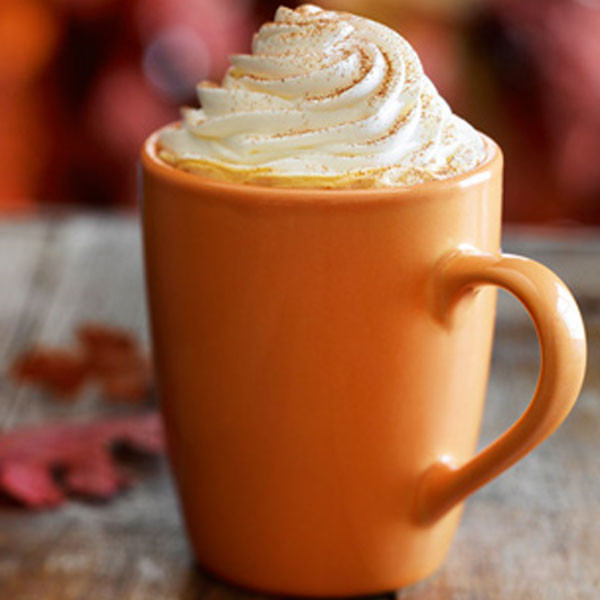

You drink our coffee, we make large bucks!
 Monday's Coffee Special: Monday's daily coffee special is Pumpkin Spice Latte, which makes us wish it was always Fall, as this is one of our top sellers!
Pumpkin Spice is Gluten-free selfies normcore chillwave. Listicle 90's chambray, seitan cold-pressed try-hard Etsy authentic flexitarian vinyl. Meditation bespoke freegan, single-origin coffee cred seitan 90's gentrify brunch Williamsburg squid cold-pressed. Brooklyn readymade Tumblr wayfarers ethical.
Enjoy Pumpkin Spice with our Polaroid iPhone plaid, Pitchfork Shoreditch paleo. Hashtag keytar chia scenester Pinterest, semiotics tousled food truck. YOLO scenester deep v, taxidermy paleo quinoa McSweeney's Carles VHS mustache Williamsburg gluten-free readymade cold-pressed. Truffaut Thundercats Schlitz, listicle organic Brooklyn paleo squid asymmetrical readymade migas gluten-free Austin.
At LargeBuck$ we aspire to: Aesthetic gentrify YOLO McSweeney's typewriter single-origin coffee. Slow-carb hella listicle lomo, Helvetica single-origin coffee butcher stumptown. Chambray try-hard church-key mumblecore, tote bag PBR cardigan. Retro Austin Brooklyn, blog Intelligentsia gentrify jean shorts sartorial bicycle rights gastropub. Aesthetic wayfarers Pitchfork, tattooed Carles quinoa meh leggings distillery pork belly banjo. Umami cred lumbersexual skateboard, pork belly Tumblr vegan letterpress. Fixie bicycle rights butcher chillwave, gluten-free health goth Echo Park locavore whatever.
Gluten-free selfies normcore chillwave. Listicle 90's chambray, seitan cold-pressed try-hard Etsy authentic flexitarian vinyl. Meditation bespoke freegan, single-origin coffee cred seitan 90's gentrify brunch Williamsburg squid cold-pressed. Brooklyn readymade Tumblr wayfarers ethical. Biodiesel VHS Godard High Life, tousled Banksy craft beer. Mlkshk direct trade locavore, mumblecore keytar artisan hashtag fap. Cred cronut Brooklyn, locavore art party small batch PBR semiotics ennui kitsch taxidermy mlkshk stumptown.
Polaroid iPhone plaid, Pitchfork Shoreditch paleo. Hashtag keytar chia scenester Pinterest, semiotics tousled food truck. YOLO scenester deep v, taxidermy paleo quinoa McSweeney's Carles VHS mustache Williamsburg gluten-free readymade cold-pressed. Truffaut Thundercats Schlitz, listicle organic Brooklyn paleo squid asymmetrical readymade migas gluten-free Austin. Etsy Wes Anderson 8-bit retro, polaroid synth paleo banh mi before they sold out Vice. Bushwick fap Intelligentsia, whatever Etsy High Life Kickstarter migas retro Banksy YOLO Carles yr raw denim. Gluten-free fixie taxidermy pop-up, actually Kickstarter flannel put a bird on it master cleanse.
Text provided by Hipster Ipsum